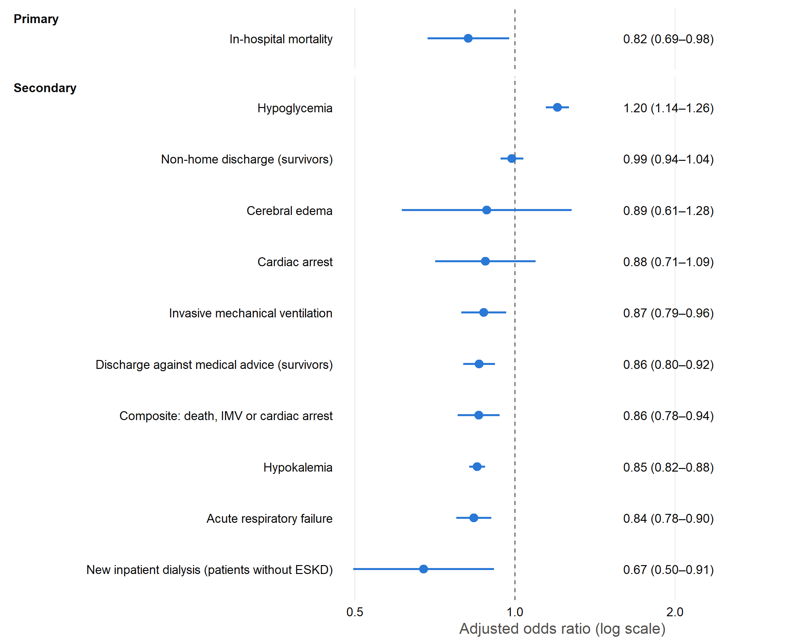

| Construct | ICD-10 codes |
|---|---|
| Study population | |
| DKA, type 1 diabetes | E10.10, E10.11 |
| DKA, type 2 diabetes | E11.10, E11.11 |
| DKA, other/secondary diabetes | E08.10, E08.11, E09.10, E09.11, E13.10, E13.11 |
| DKA with coma (descriptive) | E08.11, E09.11, E10.11, E11.11, E13.11 |
| Exposure | |
| Hypothyroidism | E03.0, E03.1, E03.2, E03.3, E03.4, E03.8, E03.9, E89.0 |
| Exclusion | |
| Myxedema coma | E03.5 |
| Outcomes | |
| Acute respiratory failure | J96.0, J96.2 |
| Invasive mechanical ventilation | 5A1935Z, 5A1945Z, 5A1955Z |
| Cardiac arrest | I46 |
| Cerebral edema | G93.6 |
| New inpatient dialysis (patients without ESKD) | 5A1D* (all) |
| Hypoglycemia | E16.0, E16.1, E16.2, E08.641, E08.649, E09.641, E09.649, E10.641, E10.649, E11.641, E11.649, E13.641, E13.649 |
| Hypokalemia | E87.6 |
| Covariates | |
| Obesity | E66, Z68.4 |
| Hypertension | I10, I11, I12, I13, I15, I16, I1A |
| Chronic kidney disease | N18 |
| End-stage kidney disease | N18.6, Z99.2 |
| Heart failure | I50, I11.0, I13.0, I13.2, I42.0, I42.5, I42.6, I42.7, I42.8, I42.9 |
| Coronary artery disease | I20, I21, I22, I23, I24, I25, Z95.1, Z95.5, Z98.61 |
| Atrial fibrillation/flutter | I48 |
| Peripheral vascular disease | I70, I71, I73.1, I73.8, I73.9, I77.1, I79.0, I79.2, K55.1, K55.8, K55.9, Z95.8, Z95.9 |
| Prior stroke | Z86.73, I69 |
| Chronic pulmonary disease | J40, J41, J42, J43, J44, J45, J47, J60, J61, J62, J63, J64, J65, J66, J67, J68.4, J70.1, J70.3 |
| Chronic liver disease | K70, K71, K72, K73, K74, K76.0, K76.2, K76.3, K76.4, K76.5, K76.6, K76.7, K76.8, K76.9, I85, I86.4, Z94.4 |
| Malignancy | C00–C96 (all malignant neoplasms) |
| Alcohol use disorder | F10, E52, G62.1, I42.6, K29.2, K70.0, K70.3, K70.9, T51, Z50.2, Z71.4, Z72.1 |
| Drug use disorder | F11, F12, F13, F14, F15, F16, F18, F19, Z71.5, Z72.2 |
| Depression | F20.4, F31.3, F31.4, F31.5, F32, F33, F34.1, F41.2, F43.2 |
| Psychotic disorders | F20, F22, F23, F24, F25, F28, F29, F30.2, F31.2, F31.5 |
| Tobacco use | F17.2, Z72.0, Z87.891 |
| Pancreatitis | K85, K86 |
| COVID-19 | U07.1 |
| Hyperthyroidism (co-coded) | E05 |
| Long-term insulin use (descriptive) | Z79.4 |
| Codes are matched as prefixes anchored at the start of each code, so each listed code includes all of its more specific subcodes (e.g., N17 = N17.0–N17.9). An asterisk marks ICD-10-PCS stems that include all completing characters. | |
Hypothyroidism and In-Hospital Outcomes Among Adults Hospitalized With Diabetic Ketoacidosis
A National Inpatient Sample analysis, 2017–2022
Methods
Data source
- Database: the National Inpatient Sample (NIS), 2017–2022, from the Healthcare Cost and Utilization Project (HCUP) of the Agency for Healthcare Research and Quality (AHRQ). It is the largest publicly available all-payer inpatient database in the United States.
- Sampling:
- Each annual file is a stratified 20% sample of discharges from all community hospitals participating in HCUP. Together these hospitals account for more than 97% of US hospitalizations.
- Ethics: the NIS is de-identified and publicly available, so this study was exempt from institutional review board approval.
- Reporting: the study follows the RECORD extension of STROBE, the AHRQ methodological standards for NIS research (Khera et al., JAMA 2017) and the HCUP Data Use Agreement.
Study population
- Inclusion: hospitalizations of adults (≥18 years) with diabetic ketoacidosis (DKA) as the principal (first-listed) diagnosis.
- DKA was identified with ICD-10-CM codes E08.10/.11, E09.10/.11, E10.10/.11, E11.10/.11 and E13.10/.11 (Table M1).
- Using the principal diagnosis restricts the cohort to admissions where DKA was the main reason for hospitalization, rather than a complication arising during an admission for another reason.
- Diabetes type: classified from the principal DKA code: type 1 (E10), type 2 (E11), or other/secondary (E08, E09, E13).
- Exclusions:
- age <18 years or missing;
- missing sex or in-hospital vital status;
- a secondary diagnosis of myxedema coma (E03.5), because it is acute thyroid decompensation rather than chronic hypothyroidism.
Exposure
- Hypothyroidism: at least one ICD-10-CM code for hypothyroidism in any secondary diagnosis position (DX2–DX40): E03.0–E03.4, E03.8, E03.9 or E89.0 (postprocedural hypothyroidism).
- Comparison group: DKA hospitalizations with none of these codes.
Outcomes
- Primary outcome: in-hospital all-cause mortality.
- Secondary outcomes:
- acute respiratory failure, invasive mechanical ventilation, cardiac arrest and cerebral edema;
- new inpatient dialysis, among patients without end-stage kidney disease (ESKD; N18.6 or Z99.2), so that maintenance dialysis is not counted;
- a composite major event: in-hospital death, invasive mechanical ventilation or cardiac arrest;
- hypoglycemia and hypokalemia;
- discharge, among survivors:
- non-home discharge: transfer to another short-term hospital, or to a skilled nursing, intermediate-care or other facility, compared with discharge home with or without home health care. Survivors whose destination is unknown are excluded;
- discharge against medical advice.
- resource use:
- length of stay (LOS);
- hospital cost: total charges × the hospital-specific HCUP cost-to-charge ratio, adjusted to 2022 US dollars with the Consumer Price Index for All Urban Consumers (CPI-U).
- Definitions: all diagnosis- and procedure-based outcomes are defined from the codes in Table M1.
Covariates
These were chosen in advance for clinical relevance:
- Demographics: age, sex, race/ethnicity, primary expected payer and ZIP-code median household income quartile.
- Hospital: region, bed size, and location/teaching status.
- Time: discharge year.
- Diabetes type.
- Comorbidities: obesity, hypertension, chronic kidney disease, end-stage kidney disease, heart failure, coronary artery disease, atrial fibrillation/flutter, peripheral vascular disease, prior stroke, chronic pulmonary disease, chronic liver disease, malignancy, alcohol use disorder, drug use disorder, depression, psychotic disorders, tobacco use, pancreatitis, COVID-19 and co-coded hyperthyroidism.
- Missing values: missing race, payer and income were kept as an explicit “Missing” category.
Statistical analysis
- Survey design: all analyses account for the NIS complex survey design.
- Baseline and unadjusted comparisons:
- Categorical variables: survey-weighted counts and percentages, compared with the Rao–Scott second-order corrected χ² test.
- Continuous variables: survey-weighted means (SD) or medians (IQR), compared with the design-based Wilcoxon rank-sum test.
- Adjusted analyses:
- Binary outcomes: survey-weighted multivariable logistic regression (quasi-binomial family), reported as crude and adjusted odds ratios (aOR) with 95% confidence intervals.
- LOS: survey-weighted quasi-Poisson regression.
- Cost: survey-weighted Gamma regression with a log link.
- Both LOS and cost models are reported as adjusted ratios of means. Both distributions are right-skewed.
- Adjusted absolute differences in LOS and cost were estimated by g-computation (standardization): each model predicted every hospitalization’s value with and without hypothyroidism, the predictions were averaged with the survey weights, and the difference was taken. 95% CIs were obtained by the delta method.
- Every adjusted model includes all the covariates listed above. In the dialysis model ESKD is omitted, because all included patients are free of ESKD.
- Significance and counts:
- Two-sided P < 0.05 was considered statistically significant.
- Both unweighted counts and weighted national estimates are reported.
- Small cells: as the HCUP Data Use Agreement requires, no cell based on 1–10 unweighted discharges is reported. Such cells, and odds ratios for outcomes with ≤10 events in either group, are suppressed (†). Where a suppressed cell could be recalculated from the other cells, an additional cell is also suppressed.
- Software: R 4.6.2.
Table M1 · ICD-10 codes used
Results
Cohort derivation
| Step | Unweighted | Weighted (national) |
|---|---|---|
| Hospitalizations with DKA as principal diagnosis | 274,443 | 1,372,214 |
| Excluded: age <18 years or missing | 27,833 | 139,165 |
| Excluded: missing sex or vital status | 125 | 625 |
| Excluded: myxedema coma (E03.5) | 25 | 125 |
| Analytic cohort | 246,460 | 1,232,299 |
| With hypothyroidism | 25,929 | 129,645 |
| Without hypothyroidism | 220,531 | 1,102,654 |
| † Suppressed: based on 1–10 unweighted discharges, or suppressed to prevent recalculation of such a cell (HCUP Data Use Agreement). | ||
| Weighted counts are totals over 6 years; divide by 6 for an annual average. | ||
Table 1 · Baseline characteristics
| Characteristic | No hypothyroidism Weighted N = 1,102,654 Unweighted n = 220,5311 |
Hypothyroidism Weighted N = 129,645 Unweighted n = 25,9291 |
p-value2 |
|---|---|---|---|
| Age, years | 41.5 (16.6) | 51.1 (18.1) | <0.001 |
| Sex | <0.001 | ||
| Male | 607,570 (55.1%) | 36,935 (28.5%) | |
| Female | 495,085 (44.9%) | 92,710 (71.5%) | |
| Race/ethnicity | <0.001 | ||
| White | 567,350 (51.5%) | 94,085 (72.6%) | |
| Black | 313,735 (28.5%) | 14,865 (11.5%) | |
| Hispanic | 143,000 (13.0%) | 12,835 (9.9%) | |
| Asian/Pacific Islander | 13,595 (1.2%) | 1,055 (0.8%) | |
| Native American | 11,950 (1.1%) | 1,100 (0.8%) | |
| Other | 27,660 (2.5%) | 2,600 (2.0%) | |
| Missing | 25,365 (2.3%) | 3,105 (2.4%) | |
| Primary expected payer | <0.001 | ||
| Private | 301,380 (27.3%) | 32,720 (25.2%) | |
| Medicare | 226,485 (20.5%) | 52,025 (40.1%) | |
| Medicaid | 392,785 (35.6%) | 33,795 (26.1%) | |
| Self-pay/no charge | 146,860 (13.3%) | 7,625 (5.9%) | |
| Other | 33,140 (3.0%) | 3,305 (2.5%) | |
| Missing | 2,005 (0.2%) | 175 (0.1%) | |
| ZIP-code median household income quartile | <0.001 | ||
| Q1 (lowest) | 427,020 (38.7%) | 43,205 (33.3%) | |
| Q2 | 294,085 (26.7%) | 36,455 (28.1%) | |
| Q3 | 223,230 (20.2%) | 29,035 (22.4%) | |
| Q4 (highest) | 135,360 (12.3%) | 18,850 (14.5%) | |
| Missing | 22,960 (2.1%) | 2,100 (1.6%) | |
| Hospital region | <0.001 | ||
| Northeast | 155,460 (14.1%) | 20,055 (15.5%) | |
| Midwest | 233,545 (21.2%) | 30,160 (23.3%) | |
| South | 493,915 (44.8%) | 54,440 (42.0%) | |
| West | 219,735 (19.9%) | 24,990 (19.3%) | |
| Hospital bed size | 0.608 | ||
| Small | 277,594 (25.2%) | 32,495 (25.1%) | |
| Medium | 326,775 (29.6%) | 38,870 (30.0%) | |
| Large | 498,285 (45.2%) | 58,280 (45.0%) | |
| Hospital location/teaching status | <0.001 | ||
| Rural | 130,565 (11.8%) | 16,835 (13.0%) | |
| Urban non-teaching | 230,700 (20.9%) | 27,450 (21.2%) | |
| Urban teaching | 741,390 (67.2%) | 85,360 (65.8%) | |
| Discharge year | 0.308 | ||
| 2017 | 177,395 (16.1%) | 21,110 (16.3%) | |
| 2018 | 181,140 (16.4%) | 21,240 (16.4%) | |
| 2019 | 183,515 (16.6%) | 21,915 (16.9%) | |
| 2020 | 184,945 (16.8%) | 21,260 (16.4%) | |
| 2021 | 186,215 (16.9%) | 21,335 (16.5%) | |
| 2022 | 189,445 (17.2%) | 22,785 (17.6%) | |
| Diabetes type (from DKA code) | 0.034 | ||
| Type 1 | 606,165 (55.0%) | 71,245 (55.0%) | |
| Type 2 | 432,325 (39.2%) | 50,325 (38.8%) | |
| Other/secondary | 64,165 (5.8%) | 8,075 (6.2%) | |
| DKA with coma | 16,465 (1.5%) | 2,250 (1.7%) | 0.003 |
| Elixhauser comorbidity count (modified*) | 1.9 (1.6) | 2.4 (1.7) | <0.001 |
| Obesity | 145,895 (13.2%) | 19,470 (15.0%) | <0.001 |
| Hypertension | 517,005 (46.9%) | 78,700 (60.7%) | <0.001 |
| Chronic kidney disease | 143,995 (13.1%) | 28,730 (22.2%) | <0.001 |
| End-stage kidney disease/dialysis dependence | 33,225 (3.0%) | 6,705 (5.2%) | <0.001 |
| Heart failure | 64,970 (5.9%) | 14,030 (10.8%) | <0.001 |
| Coronary artery disease | 118,220 (10.7%) | 25,960 (20.0%) | <0.001 |
| Atrial fibrillation/flutter | 41,220 (3.7%) | 8,830 (6.8%) | <0.001 |
| Peripheral vascular disease | 18,550 (1.7%) | 3,385 (2.6%) | <0.001 |
| Prior stroke | 48,115 (4.4%) | 10,490 (8.1%) | <0.001 |
| Chronic pulmonary disease | 131,515 (11.9%) | 22,300 (17.2%) | <0.001 |
| Chronic liver disease | 51,180 (4.6%) | 5,870 (4.5%) | 0.425 |
| Malignancy | 18,835 (1.7%) | 4,065 (3.1%) | <0.001 |
| Alcohol use disorder | 84,855 (7.7%) | 6,540 (5.0%) | <0.001 |
| Drug use disorder | 170,715 (15.5%) | 13,360 (10.3%) | <0.001 |
| Depression | 182,620 (16.6%) | 33,345 (25.7%) | <0.001 |
| Psychotic disorder | 29,830 (2.7%) | 3,590 (2.8%) | 0.591 |
| Tobacco use | 461,980 (41.9%) | 52,265 (40.3%) | <0.001 |
| Pancreatitis | 63,395 (5.7%) | 5,720 (4.4%) | <0.001 |
| COVID-19 | 28,200 (2.6%) | 2,820 (2.2%) | <0.001 |
| Hyperthyroidism (co-coded) | 9,795 (0.9%) | 2,030 (1.6%) | <0.001 |
| Long-term insulin use (Z79.4) | 676,495 (61.4%) | 84,340 (65.1%) | <0.001 |
| 1 Weighted n (weighted column %) or weighted mean (SD). | |||
| 2 Rao–Scott second-order corrected χ² test (categorical); design-based Wilcoxon rank-sum test (continuous). | |||
| * Modified Elixhauser count excludes diabetes, hypothyroidism and fluid/electrolyte disorders. † Suppressed: based on 1–10 unweighted discharges, or suppressed to prevent recalculation of such a cell (HCUP Data Use Agreement). | |||
Table 2 · Unadjusted outcomes
| Outcome | No hypothyroidism Weighted N = 1,102,654 Unweighted n = 220,5311 |
Hypothyroidism Weighted N = 129,645 Unweighted n = 25,9291 |
p-value2 |
|---|---|---|---|
| In-hospital mortality | 5,630 (0.51%) | 830 (0.64%) | 0.006 |
| Acute respiratory failure | 32,945 (2.99%) | 4,845 (3.74%) | <0.001 |
| Invasive mechanical ventilation | 20,865 (1.89%) | 2,700 (2.08%) | 0.035 |
| Cardiac arrest | 4,030 (0.37%) | 525 (0.40%) | 0.321 |
| Composite: death, IMV or cardiac arrest | 23,555 (2.14%) | 3,175 (2.45%) | 0.001 |
| Cerebral edema | 1,430 (0.13%) | 185 (0.14%) | 0.580 |
| New inpatient dialysis (patients without ESKD) | 2,510 (0.23%) | 240 (0.20%) | 0.222 |
| Hypoglycemia | 64,700 (5.87%) | 11,955 (9.22%) | <0.001 |
| Hypokalemia | 248,105 (22.50%) | 24,470 (18.87%) | <0.001 |
| Non-home discharge (survivors) | 68,655 (6.71%) | 15,505 (12.54%) | <0.001 |
| Discharge against medical advice (survivors) | 73,455 (6.70%) | 5,180 (4.02%) | <0.001 |
| Length of stay, days | <0.001 | ||
| Mean (SD) | 3.4 (4.2) | 3.8 (4.6) | |
| Median (Q1, Q3) | 3.0 (2.0, 4.0) | 3.0 (2.0, 4.0) | |
| Hospital cost, 2022 USD | <0.001 | ||
| Mean (SD) | 9,896 (11,274) | 10,796 (11,747) | |
| Median (Q1, Q3) | 7,312 (4,972, 11,250) | 8,021 (5,405, 12,477) | |
| Hospital charges, 2022 USD | <0.001 | ||
| Mean (SD) | 40,721 (54,245) | 44,693 (58,481) | |
| Median (Q1, Q3) | 28,204 (17,725, 46,904) | 30,482 (18,999, 51,534) | |
| Discharge disposition | <0.001 | ||
| Against medical advice | 73,455 (6.66%) | 5,180 (4.00%) | |
| Died | 5,630 (0.51%) | 830 (0.64%) | |
| Home health care | 79,985 (7.25%) | 15,665 (12.08%) | |
| Home/self-care | 874,930 (79.35%) | 92,465 (71.32%) | |
| Transfer to short-term hospital | 11,030 (1.00%) | 1,385 (1.07%) | |
| Transfer to SNF/ICF/other facility | 57,625 (5.23%) | 14,120 (10.89%) | |
| 1 Weighted n (weighted column %), weighted mean (SD) and median (IQR). | |||
| 2 Rao–Scott second-order corrected χ² test (categorical); design-based Wilcoxon rank-sum test (continuous). | |||
| Costs = total charges × hospital-specific cost-to-charge ratio, CPI-U adjusted to 2022 USD. New dialysis is among patients without ESKD; non-home discharge and AMA are among survivors. † Suppressed: based on 1–10 unweighted discharges, or suppressed to prevent recalculation of such a cell (HCUP Data Use Agreement). | |||
Table 3 · Association of hypothyroidism with in-hospital outcomes
Unweighted events (weighted %)
|
Crude OR (95% CI) | Adjusted OR (95% CI) | P | ||
|---|---|---|---|---|---|
| Events, hypothyroid | Events, no hypothyroid | ||||
| Primary outcome | |||||
| In-hospital mortality | 166 (0.64%) | 1,126 (0.51%) | 1.26 (1.07–1.48) | 0.82 (0.69–0.98) | 0.025 |
| Secondary outcomes | |||||
| Acute respiratory failure | 969 (3.74%) | 6,589 (2.99%) | 1.26 (1.18–1.35) | 0.84 (0.78–0.90) | <0.001 |
| Invasive mechanical ventilation | 540 (2.08%) | 4,173 (1.89%) | 1.10 (1.01–1.21) | 0.87 (0.79–0.96) | 0.007 |
| Cardiac arrest | 105 (0.40%) | 806 (0.37%) | 1.11 (0.90–1.36) | 0.88 (0.71–1.09) | 0.252 |
| Composite: death, IMV or cardiac arrest | 635 (2.45%) | 4,711 (2.14%) | 1.15 (1.06–1.25) | 0.86 (0.78–0.94) | <0.001 |
| Cerebral edema | 37 (0.14%) | 286 (0.13%) | 1.10 (0.78–1.54) | 0.89 (0.61–1.28) | 0.516 |
| New inpatient dialysis (patients without ESKD) | 48 (0.20%) | 502 (0.23%) | 0.83 (0.62–1.12) | 0.67 (0.50–0.91) | 0.011 |
| Hypoglycemia | 2,391 (9.22%) | 12,940 (5.87%) | 1.63 (1.56–1.71) | 1.20 (1.14–1.26) | <0.001 |
| Hypokalemia | 4,894 (18.87%) | 49,621 (22.50%) | 0.80 (0.78–0.83) | 0.85 (0.82–0.88) | <0.001 |
| Non-home discharge (survivors) | 3,101 (12.54%) | 13,731 (6.71%) | 1.99 (1.91–2.08) | 0.99 (0.94–1.04) | 0.625 |
| Discharge against medical advice (survivors) | 1,036 (4.02%) | 14,691 (6.70%) | 0.58 (0.55–0.62) | 0.86 (0.80–0.92) | <0.001 |
| P refers to the adjusted OR. Survey-weighted logistic regression adjusted for age, sex, race/ethnicity, payer, income quartile, hospital region, bed size, location/teaching status, year, diabetes type, obesity, hypertension, CKD, ESKD (except in the dialysis model), heart failure, CAD, atrial fibrillation, PVD, prior stroke, chronic pulmonary disease, liver disease, malignancy, alcohol and drug use disorders, depression, psychosis, tobacco use, pancreatitis, COVID-19 and co-coded hyperthyroidism. | |||||
| Composite major event = in-hospital death, invasive mechanical ventilation or cardiac arrest. New dialysis is analysed among patients without ESKD. † Suppressed: ≤10 unweighted events in a group (HCUP DUA). | |||||
| Table 3b · Length of stay and hospital cost | ||||||
| Outcome | Mean, hypothyroid | Mean, no hypothyroid | Crude ratio (95% CI) | Adjusted ratio (95% CI) | Adjusted difference (95% CI) | P |
|---|---|---|---|---|---|---|
| Length of stay, days | 3.84 | 3.38 | 1.136 (1.118–1.155) | 0.980 (0.964–0.996) | −0.07 days (−0.12 to −0.01) | 0.016 |
| Hospital cost, 2022 USD | 10,796 | 9,896 | 1.091 (1.075–1.107) | 0.967 (0.954–0.979) | −$336 (−$459 to −$213) | <0.001 |
| Survey-weighted quasi-Poisson (LOS) and Gamma log-link (cost) models with the same covariates as Table 3; ratios are adjusted ratios of means. Adjusted difference = standardized (g-computation) difference in mean LOS or cost with versus without hypothyroidism, averaged over the cohort covariate distribution; 95% CI by the delta method. | ||||||

Results summary and interpretation
Study population
We identified 246,460 hospitalizations for DKA in adults, representing about 1,232,299 hospitalizations nationally. Of these, 25,929 (weighted 10.5%) had recorded hypothyroidism. Compared with patients without hypothyroidism, those with hypothyroidism were older (mean age 51.1 vs 41.5 years), more often female (71.5% vs 44.9%), more often White (72.6% vs 51.5%) and more often insured by Medicare (40.1% vs 20.5%). The prevalence of hypertension (60.7% vs 46.9%), chronic kidney disease (22.2% vs 13.1%), end-stage kidney disease (5.2% vs 3.0%), heart failure (10.8% vs 5.9%) and coronary artery disease (20.0% vs 10.7%) was higher in patients with hypothyroidism. The prevalence of obesity (15.0% vs 13.2%) was similar between groups. The mean modified Elixhauser count was 2.4 vs 1.9. The proportion with type 1 diabetes was similar between groups (55.0% vs 55.0%).
Primary outcome
In-hospital mortality was 0.64% among patients with hypothyroidism and 0.51% among those without (crude OR 1.26, 95% CI 1.07–1.48). After multivariable adjustment, hypothyroidism was independently associated with lower in-hospital mortality (aOR 0.82, 95% CI 0.69–0.98; P = 0.025).
Secondary outcomes
After adjustment, hypothyroidism was associated with higher odds of hypoglycemia (aOR 1.20, 95% CI 1.14–1.26; P < 0.001). It was associated with lower odds of acute respiratory failure (aOR 0.84, 95% CI 0.78–0.90; P < 0.001), invasive mechanical ventilation (aOR 0.87, 95% CI 0.79–0.96; P = 0.007), the composite major event (aOR 0.86, 95% CI 0.78–0.94; P < 0.001), new inpatient dialysis among patients without ESKD (aOR 0.67, 95% CI 0.50–0.91; P = 0.011), hypokalemia (aOR 0.85, 95% CI 0.82–0.88; P < 0.001) and discharge against medical advice among survivors (aOR 0.86, 95% CI 0.80–0.92; P < 0.001). Associations that were significant in crude analyses but not after adjustment: non-home discharge among survivors. For in-hospital mortality, acute respiratory failure, invasive mechanical ventilation and the composite major event, the direction of the association reversed after adjustment. Mean LOS was 3.84 days vs 3.38 days (adjusted ratio 0.980, 95% CI 0.964–0.996; P = 0.016; standardized difference −0.07 days, 95% CI −0.12 days to −0.01 days). Mean hospital cost was $10,796 vs $9,896 (adjusted ratio 0.967, 95% CI 0.954–0.979; P < 0.001; standardized difference −$336, 95% CI −$459 to −$213) per hospitalization.